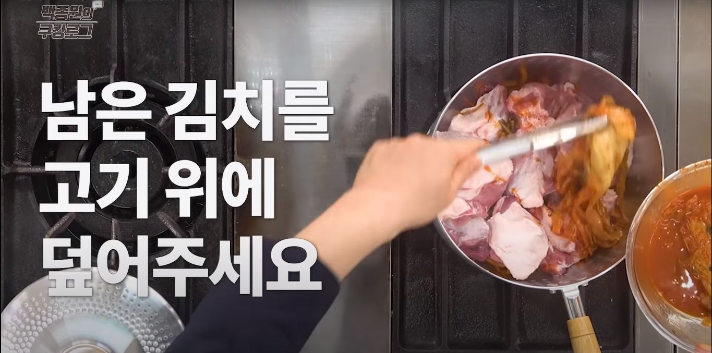
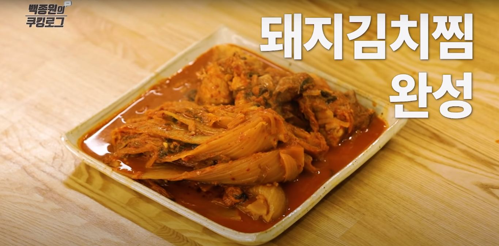

백종원의 김치찜

재료
- 1.묵은김치-1포기
- 2.돼지고기(전지)-1kg
- 3.대파-1컵
- 4.양파-1/2개
- 5.청양고추-3개
- 6.간 마늘-1큰술
- 7.굵은고춧가루-2큰술
- 8.황설탕-3큰술
- 9.국간장-2큰술
- 10.된장-1큰술
- 11.물-6컵(1.2L)
- 12.식초-기호에 맞게

조리 과정
- 1. 청양고추는 두껍게 썰고 양파는 굵게 채 썰고 대파는 취향에 맞게 썰어줍니다.

- 2. 고기는 주먹 크기로 자릅니다.

- 3. 냄비에 김치를 깔고 고기를 올린 후 다시 김치로 덮어줍니다.

- 4. 그 위에 양파, 청양고추, 대파를 넣습니다.

- 5. 물과 양념장을 잘 섞어 부어줍니다.

- 6. 센 불로 켜고 끓으면 중약불로 줄여 뚜껑 덮고 졸여줍니다.

- 7. 김치와 고기가 물러지면 간을 본 후 기호에 맞게 국간장을 넣어줍니다.
- 8. 끓어 오르면 중불에서 1시간 30분 정도 기다립니다.

- 9. 접시에 김치찜을 잘 담아주면 완성!

출처: